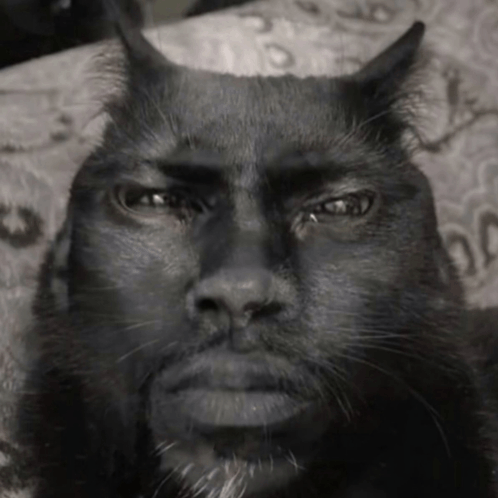

V malé vesnici rostl zvláštní strom, lípa, známý jako „dobré jatro“. Jeho plody mìly moc uzdravovat lidi a pøinášet klid. Chlapec Jakub Šerých, který mìl dobré srdce, si všiml, že strom zaèal slábnout. Jeho vìtve usychaly a plody už nebyly tak silné. Jakub Šerých mìl velkou vášeò pro fotografování. Mìl obrovský fotoaparát, starý, ale silný, a rád zachycoval krásy pøírody. Jednoho dne, když stál pod lípou, rozhodl se, že ji vyfotí. Jeho fotoaparát zachytil každý detail – køehké listy, které se zaèaly ztrácet, a stíny, které se prodlužovaly. Jakub cítil, že tato chvíle je dùležitá, že nìco musí udìlat. Když se sklánìl k focení, strom zašeptal: „Potøebuji tvou pomoc, Jakube Šerý, dej mi kousek své dobroty, abych mohl znovu rùst.“ Jakub Šerých se rozhodl, že strom zachrání. Snìdl poslední plod, a jakmile to udìlal, strom ožil, jeho vìtve se znovu zelenaly a síla se vrátila. Jakub Šerých se vrátil do vesnice, kde lidé zaèali cítit úlevu. Strom dobré jatro opìt pomáhal uzdravovat a Jakub vìdìl, že pravá síla spoèívá v pomoci druhým. A pøi každém pohledu na jeho fotky si vzpomnìl na magickou chvíli, kdy se strom probudil k životu.
POZOR NEMACKAT DOBRE RANKO!!!!!!
{kind=link}
{kind=link}